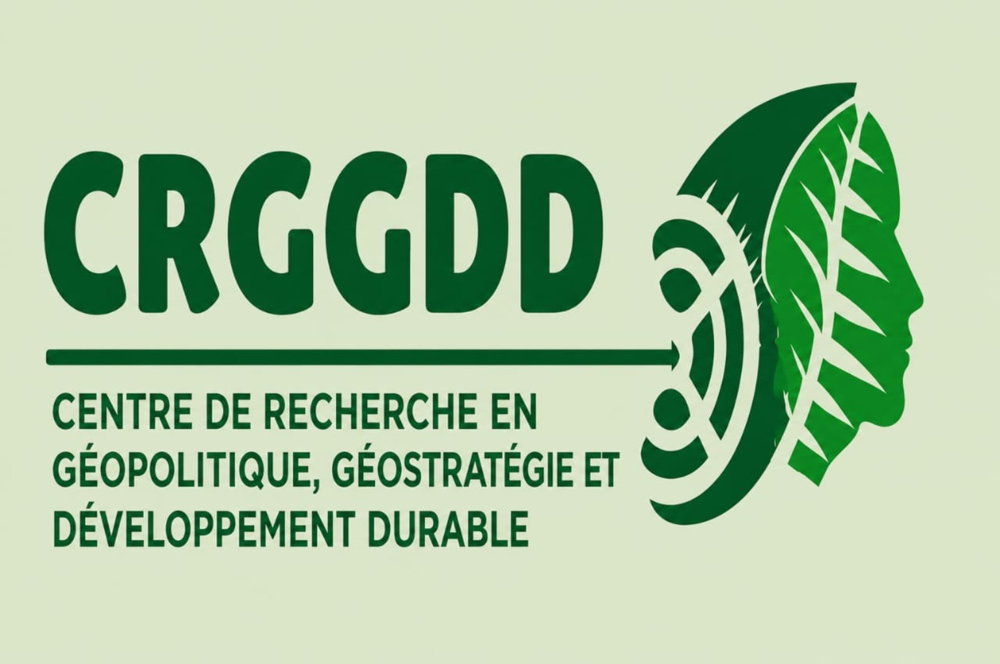
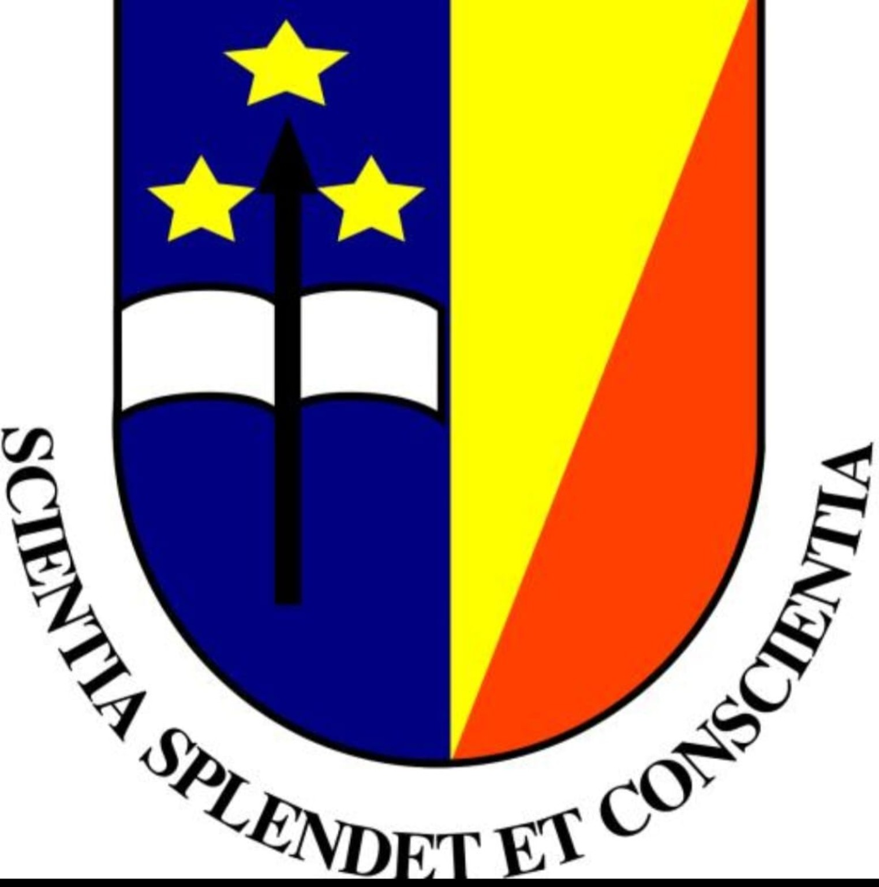
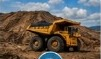

🎯 Notre Mission
Produire et diffuser des connaissances scientifiques sur les enjeux géopolitiques, géostratégiques et de développement durable, afin d’éclairer les décisions et de contribuer à un avenir plus stable, prospère et inclusif.


Produire et diffuser des connaissances scientifiques sur les enjeux géopolitiques, géostratégiques et de développement durable, afin d’éclairer les décisions et de contribuer à un avenir plus stable, prospère et inclusif.
Être un centre d’excellence reconnu en Afrique et dans le monde pour la qualité de ses recherches, de ses formations et de ses contributions scientifiques.
Une approche pluridisciplinaire pour comprendre et anticiper les défis du monde contemporain.
Dynamiques internationales, puissances et équilibres mondiaux.
Analyse des stratégies d’acteurs et des enjeux sécuritaires.
Environnement, économie verte, transition écologique et sociale.
Relations internationales, coopération et gouvernance globale.

Ressources naturelles, sécurité des approvisionnements et développement.
Coopération, intégration régionale et diplomatie économique.
Professeurs émérites, ordinaires, associés, chefs de travaux, assistants et chercheurs.
Experts nationaux et internationaux mobilisés selon les programmes de recherche.
Accompagnement des projets, partenariats et productions scientifiques.
Travaux et analyses des chercheurs du Centre.
Études stratégiques et rapports thématiques.
Valorisation de la recherche universitaire.
Rencontres autour des grands enjeux contemporains.
Cycles de séminaires scientifiques et méthodologiques.
Ateliers de recherche et de renforcement des capacités.
Retrouvez ici les nouvelles activités, publications et initiatives du CRGGDD.
Cette rubrique accueillera les appels à communications et à articles scientifiques.
Découvrez les collaborations scientifiques nationales et internationales.
Le CRGGDD développe des collaborations avec des universités, centres de recherche, institutions publiques et organisations nationales et internationales.
Centre de Recherche en Géopolitique, Géostratégie et Développement Durable
Université de Kinshasa – République Démocratique du Congo
Email : crggddunikin@gmail.com
Téléphone : +243 993 039 441